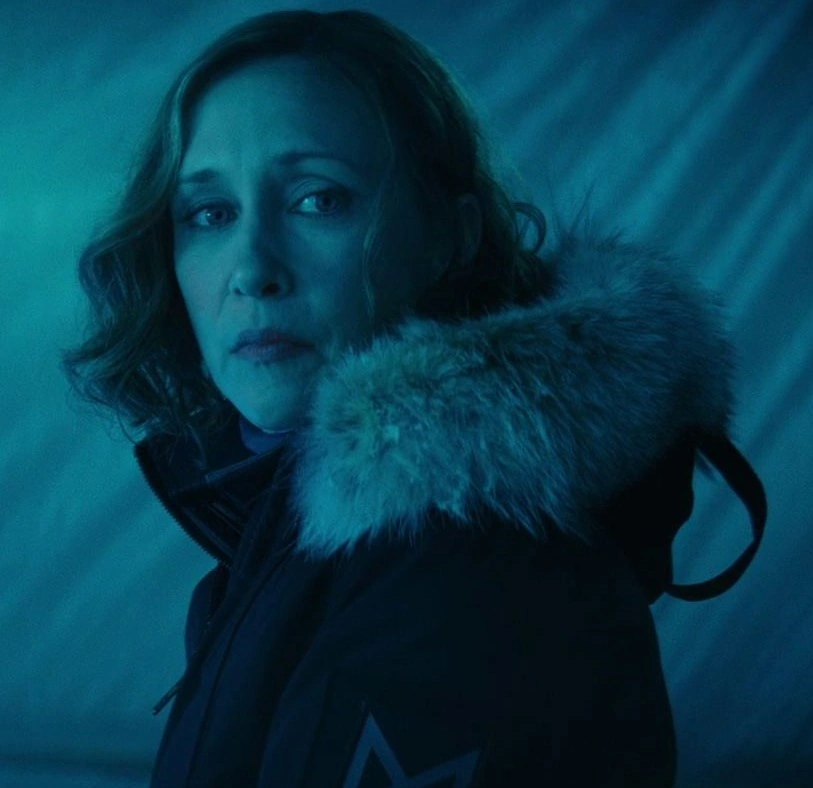
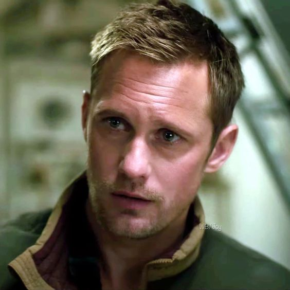

Monarch es una organización secreta dedicada a estudiar y controlar las amenazas de los titanes. Con presencia en todo el mundo, nuestro objetivo es proteger a la humanidad y desvelar los secretos del planeta.
Monarch
Dr. Serizawa
Especialista en biología marina y líder del equipo de investigación de Monarch.

Dr. Emma Russell
Experta en bioacústica, trabaja en la comunicación con los titanes.

Dr. Nathan Lind
Geólogo y explorador, enfocado en la investigación de la Tierra Hueca.